철도신호기사 (2007-05-13 기출문제)
1과목: 전자공학
1. 어느 증폭기의 초단 전압 증폭도가 25배, 2단이 20배, 3단이 20배 라면, 이 증폭기의 종합 이득은 몇 dB인가?
- 100
- 80
- 50
- 40
(정답률: 알수없음)

2. 다음 중 차동증폭기에 대한 설명으로 틀린 것은?
- 연산증폭기의 입력으로 사용된다.
- 차동신호만 증폭하는 것이 좋다.
- 낮은 임피던스와 높은 이득을 가진다.
- 동상신호제거비(CMMR)가 클수록 성능이 좋다
(정답률: 알수없음)
3. 검파효율이 90%인 직선검파회로에 반송파의 진폭이 10V이고 AM변조도가 50%인 피변조파를 인가하는 경우 부하저항에 나타나는 신호파의 진폭은 몇 V인가?
- 2.5
- 4.5
- 5.2
- 9.5
(정답률: 알수없음)
4. 다음 중 고속 스위칭 소자에 요구되는 성질로 옳은 것은?
- 하강시간이 길 것
- 상승시간 짧을 것
- 축적시간이 길 것
- 응답속도가 느릴 것
(정답률: 알수없음)
5. 전력증폭기의 출력측 기본파 전압이 50V, 제2 및 제3 고조파 전압이 각각 4V, 3V일때 왜율은 몇%인가?
- 10
- 20
- 30
- 40
(정답률: 알수없음)
6. 연산증폭기를 사용한 원브리지 발진회로의 발진주파수는?
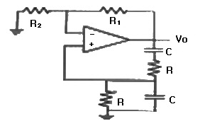
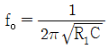
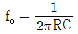
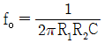
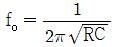
(정답률: 알수없음)
7. 하틀리 발진기와 콜피츠 발진기의 궤환요소에 해당되는 것은?
- 하틀리 : 인덕터, 콜피츠 : 인덕터
- 하틀리 : 인덕터, 콜피츠 : 커패시터
- 하틀리 : 캐패시터, 콜피츠 : 인덕터
- 하틀리 : 커패시터, 콜피츠 : 커패시터
(정답률: 알수없음)
8. 그림과 같은 이상적인 연산증폭기의 증폭도는?
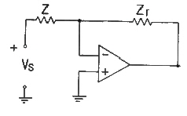
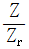
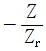
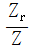
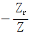
(정답률: 알수없음)
9. 다음 중 SCR의 용도로서 적합하지 않은 것은?
- 모터제어
- 전력제어
- 조광제어
- 증폭제어
(정답률: 알수없음)
10. 진폭변조에 대한 설명 중 옳은 것은?
- 주파수는 일정하고 위상이 변하는 것이다.
- 주파는 일정하고 진폭이 변하는 것이다.
- 진폭은 일정하고 반송파의 위상이 변하는 것이다.
- 진폭은 일정하고 반송파의 주파수가 변하는 것이다.
(정답률: 알수없음)
11. 다음중 부성저항의 특성을 갖는 소자는?
- BJT
- 터널다이오드
- 제너다이오드
- FET
(정답률: 알수없음)
12. T형 플립플록에 500KHz의 구형파를 인가 했을때의 출력 주파수는 몇 KHz인가?
- 100
- 125
- 250
- 500
(정답률: 50%)
13. 접합형 전계효과 트랜지스터의 핀치오프 상태에 관한 설명 중 옳지 않는 것은?
- 채널의 폭이 최소가 된다.
- 항복현상이 일어나는 전압이 된다.
- 드레인 전류가 차단된다.
- 채널의 저항이 최대가 된다.
(정답률: 알수없음)
14. 2단 증폭기에서 초단의 잡음지수 F1=5, 이득 A1 = 5, 2단의 잡음지수 F2=7일 경우 종합잡음지수 F는?
- 1.2
- 3.2
- 5.2
- 6.2
(정답률: 알수없음)
15. 다음 중 디엠퍼시스 회로에 대한 설명으로 틀린 것은?
- FM 수신기에 이용된다.
- 일종의 적분회로이다
- 높은 주파수의 출력을 감소시킨다.
- 반송파를 억제하고 양측파대를 통과시킨다.
(정답률: 알수없음)
16. 다음 중 정류기의 평활회로는 어느 것에 속하는가?
- 저역필터
- 고역필터
- 대역필터
- 대역소거필터
(정답률: 알수없음)
17. 주기 T가 2.5ms이고, 펄스폭이 2ms일 경우 튜티 사이클은 몇 % 인가?
- 80
- 70
- 60
- 50
(정답률: 알수없음)
18. 순수 실리콘 내에 정공의 수를 늘리기 위해서 붕소, 인듐, 갈륨과 같은 3가 불순물을 가진 원자를 넣은 반도체는?
- 진성반도체
- P형 반도체
- N형 반도체
- PN접합 반도체
(정답률: 알수없음)
19. 다음 IC 중에서 소비전력이 가장 작은 것은?
- TTL
- ECL
- DTL
- CMOS
(정답률: 알수없음)
20. 다음 회로는 어떤 논리 게이트의 구성인가?
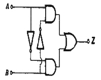
- NAND게이트
- EX-OR게이트
- NOR게이트
- OR게이트
(정답률: 알수없음)
2과목: 회로이론 및 제어공학
21. 그림과 같은 회로에서 2Ω의 단자 전압은 몇V인가?
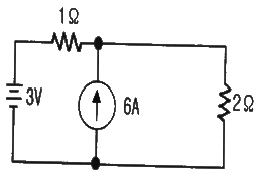
- 3
- 4
- 6
- 8
(정답률: 알수없음)
22. 대칭 3상 Y결선 부하에서 각상의 임피던스가 Z=12+j16이고, 부하전류가 10A일때, 이 부하의 선간전압은 약 몇 V 인가?
- 235.7
- 346.4
- 456.4
- 524.7
(정답률: 알수없음)
23. R=5Ω, L=20mH 및 가변 콘덴서 C로 구성된 RLC 직렬 회로에 주파수 1000Hz인 교류를 가한 다음 C를 가변시켜 직렬공진시킬때 C의 값은 약 몇 μF인가?
- 1.27
- 2.54
- 3.52
- 4.99
(정답률: 50%)
24. 기본파의 40%인 제3고조파와 30%인 제5고조파를 포함하는 전압파의 왜형률은 얼마인가?
- 0.3
- 0.5
- 0.7
- 0.9
(정답률: 알수없음)
25. 3상 불평형 전압에서 역상전압이 25V이고, 정상전압이 100V, 영상전압이 10V라 할때, 전압의 불평형률은 얼마인가?
- 0.25
- 0.4
- 4
- 10
(정답률: 알수없음)
26. 4단자망의 파라미터 정수에 관한 서술 중 잘못된 것은?
- ABCD 파라미터 중 A 및 D는 차원이 없다
- h파라미터 중 h12및 h21은 차원이 없다
- ABCD 파라미터 중 B는 어드미턴스, C는 임피던스의 차원을 갖는다.
- h파라미터 중 h11은 임피던스, h22는 어드미턴스의 차원을 갖는다.
(정답률: 알수없음)
27. 분포 정수 회로에서 선로 정수가 R, L, C, G이고 무왜조건이 RC=GL과 같은 관계가 성립될때 선로의 특성 임피던스 Z0는?
- Z0 = √치
- Z0 = 1/√CL
- Z0 = √RG
- Z0 = √L/C
(정답률: 알수없음)
28. sinωt의 라플라스 변환은?
- S/(S2+ω2)
- ω/(S2+ω2)
- S/(S2-ω2)
- ω/(S2-ω2)
(정답률: 알수없음)
29. 그림과 같은 회로의 전달함수 Eo(S)/Ei(S)는?
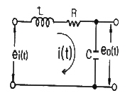
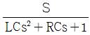
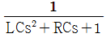
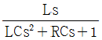
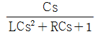
(정답률: 알수없음)
30. 그림의 정전용량 C를 충전한후 스위치 S를 닫아 이것을 방전하는 경우의 과도전류는?
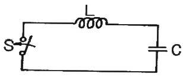
- 불변의 진동전류
- 감쇠하는 전류
- 감쇠하는 진동전류
- 일정치까지 증가한 후 감쇠하는 전류
(정답률: 알수없음)
31. 그림과 같은 회로의 출력 Z는 어떻게 표현되는가?
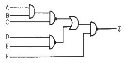
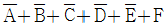
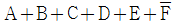
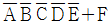
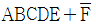
(정답률: 알수없음)
32. Z-변환함수 Z/(Z-e-aT)에 대응되는 라플라스 변환 함수는?
- 1/(S+a)2
- 1/(1-e-TS)
- a/S(S+a)
- 1/(S+a)
(정답률: 알수없음)
33. 특성방정식 S4+2S3+5S2+4S+2=0으로 주어졌을때 이것을 후르비쯔의 안정조건으로 판별하면 이계는 어떻게 되는가?
- 안정
- 불안정
- 조건부 안정
- 임계상태
(정답률: 알수없음)
34. 다음 그림의 신호흐름 선도에서 C/R는?
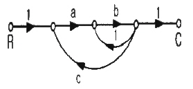
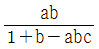
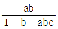
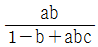
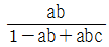
(정답률: 알수없음)
35. 상태방정식 X=AX(t)+Bu(t)에서 A=(1열 0,1 / 2열 -2,-3)일때 특성방정식의 근은?
- -2, -3
- -1, -2
- -1, -3
- 1, -3
(정답률: 알수없음)
36. 1차요소 G(S)=1/(1+TS)인 제어계의 절점 주파수에서 이득은 약 몇 dB인가?
- -5
- -4
- -3
- -2
(정답률: 알수없음)
37. 기준입력과 주궤환량과의 차로서, 제어계의 동작을 일으키는 원인이 되는 신호는?
- 조작신호
- 동작신호
- 주궤환신호
- 기준입력신호
(정답률: 알수없음)
38. 과도응답이 소멸되는 정도를 나타내는 감쇠비는?
- 최대오버슈트/제2오버슈트
- 제3오버슈트/제2오버슈트
- 제2오버슈트/최대오버슈트
- 제2오버슈트/제3오버슈트
(정답률: 알수없음)
39. 그림과 같은 회로망은 어떤 보상기로 사용할 수 있는가? (단, 1 ＜ R1C 인 경우로 한다.)
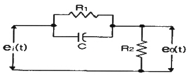
- 진상보상기
- 지상보상기
- 지진상보상기
- 진지상보상기
(정답률: 알수없음)
40. 샘플러의 주기를 T라 할때 S평면상의 모든 점은 식 Z=eST에 의하여 Z평면상에 사상된다. S평면의 좌반평면상의 모든 점은 Z평면상 단위원의 어느 부분으로 사상되는가?
- 내점
- 외점
- 원주상의 점
- Z평면 전체
(정답률: 알수없음)
3과목: 신호기기
41. 60Hz, 6극 유도전동기의 슬립이 4%일 때의 매분 회전수는 몇 rpm인가?
- 1152
- 1178
- 1200
- 1218
(정답률: 알수없음)
42. 직류 직권전동기가 전차용에 사용되는 가장 적당한 이유는?
- 속도가 클때 토크가 크다.
- 가변속도이고 토크가 작다
- 토크가 클 때 속도가 작다
- 불변속도이고 기동토크가 크다
(정답률: 알수없음)
43. 농형 유도전동기의 기동법이 아닌 것은?
- 2차 저항기동법
- Y-△기동법
- 리액터기동법
- 기동보상기법
(정답률: 알수없음)
44. 다음 계전기에서 결선도용 기호의 명칭은?
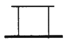
- 거치형 완동계전기
- 거치형 완방계전기
- 삽입형 완동계전기
- 삽입형 완방계전기
(정답률: 알수없음)
45. 신호용 계전기의 종류에서 직류계전기의 종류에 해당되는 것은?
- 유극계전기
- 1원형계전기
- 2원형계전기
- 3원형계전기
(정답률: 알수없음)
46. 직류분권전동기가 있다. 단자전압이 215V, 전기자 전류 50A, 전기자의 전저항이 0.1Ω, 회전속도 1500rpm일때 발생토크는 약 몇 kgm인가?
- 68.2
- 66.8
- 6.82
- 6.68
(정답률: 알수없음)
47. 3상 유도전동기의 1차 입역 60Kw, 1차 손실 1Kw, 슬립 3%일때 기계적 출력은 약 몇 KW인가?
- 62
- 60
- 59
- 57
(정답률: 알수없음)
48. 건널목 경보기는 일반적으로 도로의 우측에 설치하여야 하며 경보등의 확인거리는 특수한 경우 이외에는 45m이상을 확보하고 직립형 경보등은 등당 1분에 몇 회 점멸하여야 하는지 가장 적당한 것은?
- 30±10회
- 40±20회
- 50±10회
- 60±20
(정답률: 알수없음)
49. 직류 분권 전동기의 전압이 일정할 때 부하 토크가 2배이면 부하전류는 약 몇 배가 되는가?
- 1
- 2
- 1/2
- 1/4
(정답률: 알수없음)
50. %저항강하가 3%, 리액턴스강하가 4%일때 변압기의 최대전압 변동률은 얼마인가?
- 3
- 4
- 5
- 6
(정답률: 알수없음)
51. 다이액(DIAC)설명 중 잘못된 것은?
- 다이액의 항복전압을 넘을때 갑자기 콘덴서가 방전하고 그 방전전류에 의하여 트라이액을 ON시킬 수가 있다.
- 쌍방향으로 대칭적인 부성저항을 나타낸다.
- NPN 3층으로 되어있다.
- 역저지 4극 사이리스터로 되어 있다.
(정답률: 알수없음)
52. 신호용 계전기의 규격에서 접점수가 NR2인 계전기는?
- 직류무극 궤도 계전기
- 삽입형 자기 유지 계전기
- 삽입형 직류 완방 계전기
- 직류단속계전기
(정답률: 알수없음)
53. 전기 선로전환기의 전환을 직접 제어하는 계전기는?
- WR
- HR
- ZR
- TR
(정답률: 73%)
54. 3상 유도 전동기의 특성 중 비례추이를 할 수 없는 것은?
- 토크
- 출력
- 1차입력
- 2차전류
(정답률: 알수없음)
55. 1차 전압 6600V, 권수비 20인 단상변압기로 전등부하에 20A를 공급할때의 입력은 몇 KW인가? (단, 변압기의 손실은 무시한다.)
- 4.4
- 5.5
- 6.6
- 7.7
(정답률: 알수없음)
56. 반파정류회로에서 직류전압 200V를 얻는데 필요한 변압기 2차상전압은 약 몇V인가? (단, 부하는 순저항 부하이며, 변압기내의 전압강하는 무시하고, 정류기내의 전압강하는 25V로 한다.)
- 120
- 200
- 225
- 500
(정답률: 알수없음)
57. 전기 전철기의 동작 순서가 옳은 것은?
- 전환-해정- 쇄정-표시
- 해정-전환-쇄정-표시
- 표시-해정-쇄정-전환
- 표시-쇄정-해정-전환
(정답률: 알수없음)
58. 계전 권선이 전기자에 병렬로만 연결된 직류기는?
- 분권기
- 직권기
- 복권기
- 타여자기
(정답률: 알수없음)
59. 임피던스 전압을 걸때의 입력은?
- 정격용량
- 철손
- 임피던스 와트
- 전부하시의 전손실
(정답률: 알수없음)
60. 3상 유도전동기의 출력이 10KW, 슬립이 4.8%일때의 2차 동손은 약 몇 KW 인가?
- 0.5
- 0.7
- 0.9
- 1.2
(정답률: 알수없음)
4과목: 신호공학
61. 철도신호에서 안전측의 제어나 상태에 대한 설명으로 틀린 것은?
- 열차속도에 관해서는 정지시키는 것
- 신호기는 정지신호를 출력하는 것
- 선로전환기는 그 상태를 유지하여 전환하지 않는 것
- 장치의 조립이 끝나고 시험에서 발견되는 것
(정답률: 알수없음)
62. 3위식 신호기에 대한 신호현시로 틀린 것은?
- 신호기 현시를 정지,주의,진행 2색으로 점등시키는 현시방법이다.
- 4현시를 할 수 있다.
- 5현시를 할 수 있다.
- 신호기 내방 한 구간의 진로를 표시한다.
(정답률: 알수없음)
63. 그림과 같은 도면의 내용 설명으로 적당한 것은?
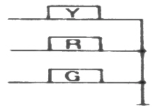
- 진로선별회로의 정위배향 부분이다.
- 신호제어회로의 반응계전기회로이다.
- 다등형 3현시를 나타낸다.
- 단등형 3위식 신호기구 결선방식이다.
(정답률: 알수없음)
64. 교류 전철구간의 직규 단궤조 궤도회로의 길이가 500M, 레일임피던스가 0.6Ω/KM, 전차의 귀선전류가 150A,라하면 레일간에 발생하는 방해전압은 몇V가 되는가? (단, 레일 상호간 유도계수는 1이다)
- 45
- 50
- 55
- 60
(정답률: 알수없음)
65. 비자동 구간의 장내신호에 종속하며 주신호기를 향하여 진행하는 열차에 대하여 주신호기가 진행을 현시할 때 진행신호를 현시하고, 주신호기가 정지일 때는 주의신호를 현시하는 신호기는?
- 폐색신호기
- 입환신호기
- 엄호신호기
- 원방신호기
(정답률: 알수없음)
66. 신호보안장치는 고장이 발생할 때 안전측으로 동작하도록 함이 원칙이다. 안전측 동작으로 옳은 것은?
- 절대신호는 진행으로 쇄정하는 것이 원칙이다.
- 허용신호는 주의로 쇄정하는 것이 원칙이다.
- 계전기 회로는 무여자로 쇄정하는 것이 원칙이다.
- 쇄정 전자석 회로는 여자로 쇄정하는 것이 원칙이다.
(정답률: 알수없음)
67. 상치 신호기의 설치에 대한 설명으로 틀린 것은?
- 신호기는 소속선의 바로 위 또는 좌측에 세우는 것이 원칙이다.
- 2 이상의 진입선에 대해 같은 종류의 신호기가 동일 위치에 설치될 경우에는 각 신호기의 배열방법은 진입 선로의 배열과 동일하게 한다.
- 신호기는 예외없이 1진로마다 2기의 신호기를 설치함을 원칙으로 한다.
- 주신호기 및 유도신호기는 같은 신호기주에 설치할 수 있다.
(정답률: 60%)
68. 궤도계전기의 동작조건에 직접적인 관계없이 동작되는 장치는?
- 열차집중제어장치
- 열차자동정지장치
- 자동폐색장치
- 연동폐색장치
(정답률: 알수없음)
69. 역간 열차평균 운전시분이 4.5분이고 폐색취급 시분이 1.5분일 경우 선로 이용률이 0.8인 단선구간의 선로용량은 얼마인가?
- 192회
- 240회
- 300회
- 384회
(정답률: 알수없음)
70. 궤도회로 사구간에 대한 설명으로 옳은 것은?
- 역구간 분기부의 사구간 길이는 10M미만으로 한다.
- 사구간이 1210mm이상인 경우는 타 궤도회로와 10cm이상 이격시킨다.
- 단독 사구간의 길이는 7m를 넘지 않도록 하여야 하며, 7m가 넘는 곳에서는 사구간 보완회로를 구성한다.
- 사구간이 7m이상인 경우는 타 궤도회로와 5m이상 이격시킨다.
(정답률: 알수없음)
71. 철도신호지침에서 정하는 알칼리 축전지의 방전종지 전압은 몇 v로 되어 있는가?
- 1.1
- 1.8
- 1.9
- 2.0
(정답률: 알수없음)
72. 철도 건널목을 횡단하는데 소요되는 시간을 산출하고자 한다. 바깥쪽 궤도 중심에서 통행인의 정지위치까지의 거리 5m, 복선의 선로간격 4m, 자동차의 길이 12m, 안전확인에 필요한 시간 3초, 건널목 횡단속도 1.5m/s라고 하면 건널목 횡단 소요시간은 몇 초인가?
- 17.66
- 18.66
- 19.33
- 20.33
(정답률: 알수없음)
73. 속도조사식 열차자동정지장치의 지상자의 취부위치에 대한 다음 기준 중 틀린 것은?
- 궤간 중심으로부터 지상자 중심선과의 간격은 열차 진행방향으로 보아 일반적인 경우 우측 300mm±10mm 이내로 유지한다.
- 레일 상면으로부터 지상자 상면까지의 높이는 50~80mm 범위로 한다.
- 지상자 밑면과 자갈과이 간격은 50mm이상 유지한다.
- 레일 이음매부에서 3본 이내의 침목을 피한다.
(정답률: 알수없음)
74. 신호정보 분석장치의 종류로 볼 수 없는 것은?
- 건널목 경보장치용
- 자동폐색장치용
- 궤도회로장치용(AF 및 임펄스)
- 전환쇄정장치용
(정답률: 알수없음)
75. CTC 장치의 현장역과 사령실간의 정보전송을 위한 DTS에 사용하는 데이터 전송방식은?
- Half Duplx
- Synchronous
- Multiplex
- simplex
(정답률: 알수없음)
76. CTC의 효과에 해당되지 않는 것은?
- 선로용량 증대의 효과
- 열차운전 정리의 신속 및 정확화
- 폐색구간이 필요 없고 여객안내 자동화
- 신호보안자치의 고장 파악용이
(정답률: 알수없음)
77. 다음 중 궤도회로장치의 단락감도를 높이기 위한 방법이 아닌 것은?
- 송전 및 착전 전압을 최대한 높인다.
- 송전단과 수전단의 임피던스를 될 수 있는 한 높인다.
- 동작전압과 낙하전압의 차가 적은 궤도계전기를 사용한다.
- 궤도계전기에는 최소한의 필요전압만 공급되도록 조정한다.
(정답률: 알수없음)
78. 열차자동정지장치에서 지상자 제어계전기 접점을 개방한 상태에서 공진회로의 선택도 Q 값의 유지 범위로 옳은 것은?
- 점제어식 : 공진주파수 130/Hz에서 30~80, 속도제어식 : 공진주파수에서 40이상
- 점제어식 : 공진주파수 130/Hz에서 90~120, 속도제어식 : 공진주파수에서 50이상
- 점제어식 : 공진주파수 130/Hz에서 100~180, 속도제어식 : 공진주파수에서 60이상
- 점제어식 : 공진주파수 130/Hz에서 50~190, 속도제어식 : 공진주파수에서 70이상
(정답률: 알수없음)
79. 연동검사의 시행기준이 아닌 것은?
- 전원회로는 케이블의 표피전류를 측정한다.
- 궤도회로는 궤도상에서 단락한다.
- 신호등은 현장에서 현시상태를 확인한다.
- 선로전환기 밀착 및 개통방향을 확인한다.
(정답률: 알수없음)
80. 연동도표에서 소속선명 및 역명 또는 신호소명, 배선약도, 연동장치의 종병, 그리고 연동표를 기대하도록 되어있다. 다음 중 연동표의 기재사항이 아닌 것은?
- 출발점 및 도착점의 취급버튼
- 접근 또 보류쇄정
- 신호기 명칭
- 전원공급 장치의 종류
(정답률: 알수없음)